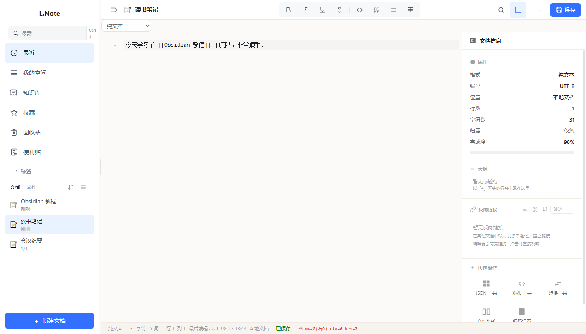
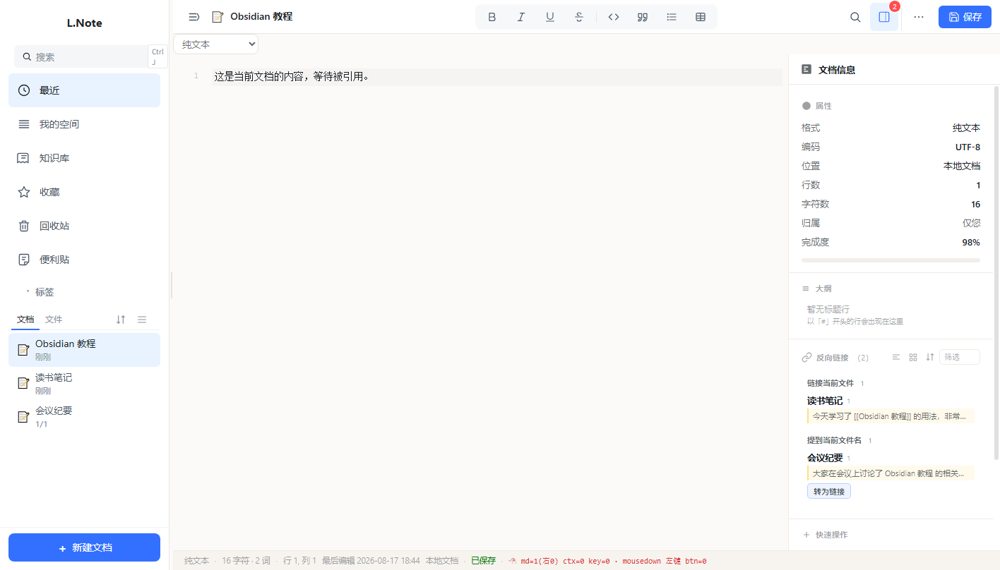
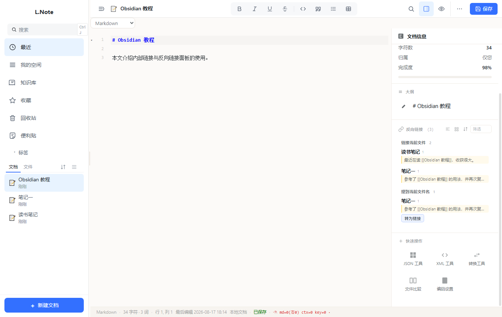

L.
反向链接 · 操作指南
L.Note（Inkpad）内置 Obsidian 风格反向链接面板，帮你发现文档之间的关联
版本 v0.21.11 · 纯本地运行 · 4 步上手
反向链接能做什么？当你写完一篇笔记，它很难回答"谁引用过我"。反向链接面板会扫描全部本地文档，找出
明确链接（正文中的
[[文档标题]]）和 潜在引用（正文出现了文档标题但还没建立链接），
让你一眼看到知识之间的关联，并支持一键把潜在引用转成正式链接。
操作流程
1
在其他文档中引用标题
在任意文档正文写入
[[目标文档标题]] 即为内部链接（也支持 [[标题|别名]]）；
写入的瞬间编辑器就会高亮显示这段链接，让你立刻知道它生效了。
也可以直接输入目标文档的标题文字，它会被识别为"潜在引用"。

「笔记一」中的 [[Obsidian 教程]] 被蓝色下划线高亮
2
打开目标文档，反向链接自动出现
打开被引用的文档（Obsidian 教程），右上角「文档信息」按钮上会显示红色计数徽标，
右侧信息面板会自动展开，直接看到「反向链接」卡片。卡片分两组：
链接当前文件（明确链接）与 提到当前文件名（潜在引用，带「转为链接」按钮）。

徽标显示 2 · 面板自动展开：链接 1 篇 + 提到 1 篇
3
点击链接，一键跳转
编辑器里高亮的
[[链接]] 是可以点击的——单击它，
会直接跳转到目标文档；反向链接面板里的每一条记录同样可以点击打开，
在笔记之间穿梭就像浏览网页一样。

点击 [[Obsidian 教程]] 后直接打开目标文档
4
一键「转为链接」
在「提到当前文件名」分组里，点击某条记录右侧的「转为链接」按钮，
该文档正文中的标题文字会自动变成
[[标题]]，随即归入「链接当前文件」，
形成正式关联——面板会实时刷新，无需手动重新打开。

点击「转为链接」后，会议纪要移入「链接当前文件」，原文变为 [[Obsidian 教程]]
小提示：点击任意截图可放大查看细节。反向链接面板随当前文档切换自动刷新；富文档（思维笔记）同样支持——
各块的文字都会被扫描，转为链接也会精确改写对应块的文本。